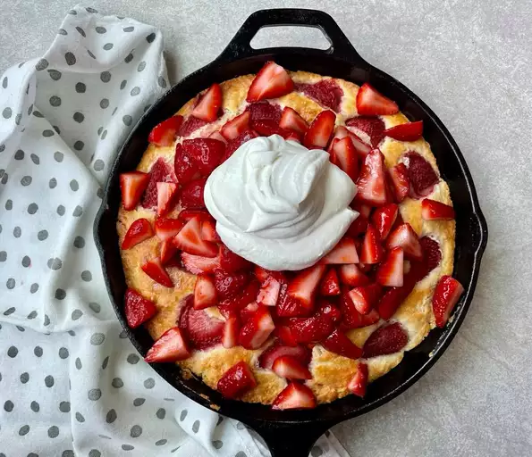

Skillet Strawberry Shortcake

Description:
This fuss-free strawberry shortcake made in a pan eliminates much of the hassle and mess of traditional strawberry shortcakes. Instead of flouring the counter and rolling and cutting out individual shortcakes, you'll bake one giant skillet biscuit-like cake that's topped with macerated strawberries and whipped cream. Perfect for celebrating the arrival of warmer, sunnier days.
Ingredients:
Shortcake:
- 3 cups all-purpose flour
- ½ cup white sugar
- 1 tablespoon baking powder
- 1 teaspoon salt
- 1 cup cold buttermilk
- 1 large egg yolk
- 1 teaspoon vanilla extract
- 12 tablespoons cold unsalted butter, cubed
- ½ cup sliced strawberries
Strawberry Topping:
- 4 cups ripe strawberries, hulled and quartered
- 2 tablespoons white sugar
- 1 medium lemon, zested
Whipped Cream:
- 1 cup heavy whipping cream
- 1 tablespoon white sugar, or more to taste
- ¼ teaspoon vanilla extract
Steps:
- Preheat the oven to 400 degrees F (200 degrees C). Lightly grease a 10-inch cast iron skillet; line the bottom with a round of parchment paper.
- Whisk flour, sugar, baking powder, and salt for shortcake together in a large mixing bowl. Whisk buttermilk, egg yolk, and vanilla together in a glass measuring cup until evenly combined; set aside.
- Scatter the butter pieces over the flour mixture. Use a rubbing motion with your fingertips and cut the butter into the flour mixture to distribute. Create a well in the center of the flour mixture. Pour the buttermilk mixture into the center of the well. Use a rubber spatula to mix the flour into the buttermilk mixture to form a moist, shaggy dough.
- Transfer the dough to the prepared skillet. Smooth the dough to distribute evenly in the pan. Press the sliced strawberries gently into the surface.
- Bake in the preheated oven until golden brown and baked through, 25 to 30 minutes. Cool for 10 minutes.
- To prepare the topping, stir together the quartered strawberries, sugar, and lemon zest in a medium mixing bowl to macerate.
- To prepare the whipped cream, combine whipping cream, sugar, and vanilla in a chilled mixing bowl. Using an electric mixer fitted with a whisk attachment, beat at medium speed until soft peaks form.
- Spoon the strawberries and juices over the shortcake. Serve with whipped cream.